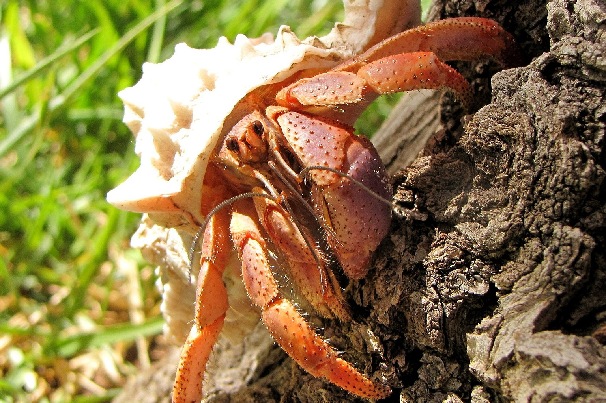

Humidity and Salt Water Pools for Land Hermit Crabs
Hermit crabs do not drown in water — they drown in air that is too dry. The two-pool system, the substrate depth, and the gauge that decides whether they survive a moult.

A land hermit crab's gill chamber has to stay wet for the animal to breathe, which is why the air in the tank wants to sit at 70-80 % relative humidity and why a pool of fresh water and a pool of salt water mixed to 1.020-1.024 specific gravity are not optional extras. A crab that can't wet its gills is a crab that is suffocating in slow motion, and a crab without a proper salt pool can't regulate the mineral balance of its own blood. Get those two numbers right and the animal has a chance. Get them wrong and you'll spend three months watching it go quiet.
The night I found a crab out of its shell
It was about 11pm in February and I was doing the last humidity check of the evening — a habit I picked up after losing an animal to a cracked hygrometer reading 12 % too low. My big Coenobita clypeatus, a male I'd had for four years, was sitting in the corner by the water dish, and his abdomen was bare. Not entirely. Just the last third, pale and soft, hanging out of the shell opening like something I shouldn't be seeing. I picked him up — wrong, I know, but I wasn't thinking — and he didn't retract. I put him back in a smaller bare-bottom tank with a shallow dish of dechlorinated water and two clean shells of the right size and just sat with him for two hours. The tank had been running at 62 % because I'd let the coco fibre go dry in a cold snap and I'd trusted a dial hygrometer that turned out to be reading high. He survived. He moved into a bigger shell four days later, and I bought a digital hygrometer the next morning. The old dial went in the bin.
What relative humidity actually does to a hermit crab
Hermit crabs don't have lungs. They have modified gills — branchiae — packed into a chamber on each side of the body, and those gills only work when they're wet. In the wild the animal manages this by living near the sea, in damp leaf litter, with regular access to water. In a tank it depends entirely on you.
Relative humidity is just how saturated the air is with water vapour at a given temperature — 70 % means the air is holding 70 % of what it could hold before it starts condensing on surfaces. At 70-80 % the gill chamber stays moist between drinks. Below about 60 % the air pulls water out of the crab faster than it can replace it, and the first thing you notice is not the gills. It's the animal sitting in the water dish for hours. That's a crab trying to rehydrate. Then it stops eating. Then it goes sluggish and stops responding to food.
There's a second layer here. Hermit crabs moult — they shed the whole exoskeleton so they can grow — and the new shell underneath is soft for days afterwards. A moult that begins in dry air can stall partway through. The old cuticle sets harder than it should, the crab can't separate it cleanly, and you end up with a partly-shed animal that is now vulnerable to every tank mate. This is the same mechanism that kills mismoulted scorpions, tarantulas and reptiles: the ecdysial fluid that should lubricate the split dries out before the job is done. The window is not long. A crab that has gone down to moult in dry substrate is in real trouble.
Setting up the water: fresh, salt, and the difference
You need two pools. One is fresh, dechlorinated water. The other is salt water mixed from marine salt to a specific gravity of 1.020-1.024 on a hydrometer. Don't use table salt. Don't use aquarium salt for freshwater fish. Don't use "hermit crab salt" sold as a powder to sprinkle on food — it's not the same thing and it doesn't give you the trace minerals a marine mix does.
Mix the salt water in a separate container, bring it to temperature, and check with a refractometer or a hydrometer float. The cheap swing-arm hydrometers that come in kits are fine once you know their offset. Test yours against a known reading or against a shop's refractometer, write the difference on a bit of tape, and stick that to the bottle. I aim for 1.022 and I don't fuss if it's 1.021 or 1.023.
The cheapest way to get both water types right from day one is a marine salt and hydrometer set rather than guesswork:
Change both pools every two to three days, or immediately if the crab has fouled them. Pools should be deep enough that the crab can fully submerge — for an adult that means about 2-3 inches of water — but escape must be easy. A crab that can get in but can't climb out will drown. I've lost one that way and it's not a good way to learn.
The three numbers you check every morning
Temperature first. The warm end sits at 80-85 °F (27-29 °C), the cool end at 72-78 °F (22-26 °C). That gradient matters — a crab that's too warm can move away from the heat, and a crab that's moulting needs to be able to pick a cooler, damper spot. A single thermostat probe on the warm side plus a second thermometer on the cool side tells you both ends. The 2-pack of digital hygrometers and thermometers with two probes is what I use because you can put one probe in the substrate and one in the air, and you get humidity and temperature from the same display:
Humidity second: 70-80 % everywhere, with the substrate itself damp right down to the bottom of the layer, not just wet on top. If the surface is dry and the bottom is wet, you have stratification and the crabs sitting on top are in dry air. Mist once or twice a day into the top layer, but do not make the substrate into mud — waterlogged substrate grows bacteria and the crabs will sit in it and rot. You want it the consistency of a wrung-out sponge.
Third, check the water. Specific gravity, temperature of the pools, and whether either has been fouled. Every morning. Three checks, three numbers. Two minutes.
Life stages, substrate and the enclosure as a small system
Juveniles — anything under about a 1-inch shell opening — are far more sensitive to drying out than adults, simply because their surface-area-to-volume ratio is higher. A juvenile enclosure can run wetter than an adult one and should never drop below 70 %. Water depth should be shallow enough for them to stand, with a slope or a bit of cork bark to climb out. Adults handle slightly drier air overnight but still want the 70-80 % band and full-submersion pools. Subadults are the tricky middle: they're moulting frequently, they're moving shells often, and they still need humidity at the top of the range.
Substrate: 6 inches minimum for adults, 4 for juveniles, deeper if you can. Compressed coco fibre rehydrated to damp is the base I use, mixed with a little play sand for drainage. It has to hold moisture without going stagnant. The coco fibre blocks are cheap and consistent:
Table of the numbers, all checkable:
| Life stage | Shell opening | Substrate depth | Humidity band | Pool depth | Salt water SG |
|---|---|---|---|---|---|
| Juvenile | under 1 inch | 4 inches | 72-80 % | 1 inch with slope | 1.020-1.024 |
| Subadult | 1-1.5 inches | 5 inches | 72-80 % | 1.5-2 inches | 1.020-1.024 |
| Adult | over 1.5 inches | 6 inches+ | 70-80 % | 2-3 inches | 1.020-1.024 |
Bioactive is possible — springtails and isopods in the substrate break down waste — but only if the drainage is real. A false bottom, a layer of leca or gravel under a divider, and a way to siphon out the reservoir without disturbing the crabs. Without that, a bioactive hermit crab tank turns into a swamp within a month. I don't run bioactive in mine. I run bare-bottom plus a removable substrate tray, because I need to check for moulting crabs and I need to be able to strip it out fast. That's a personal choice, not a rule.
Behaviour that tells you the humidity is wrong
A crab that sits in the salt pool for an hour is not necessarily sick. A crab that sits in it for four hours every day is telling you the air is dry. A crab that hugs the warm side constantly is either cold or trying to dry out — you need the reading to tell which. A crab that buries itself and stays buried for weeks is moulting, and you should not dig it up unless the tank has been disturbed or a moult smell tells you something has gone wrong. Molting crabs are the most fragile animals in the tank and the substrate needs to be right the whole time they're down.
The other signal is shell changes. A crab that switches shells every few days is stressed — usually by humidity, temperature or crowding. A crab that picks one and stays put is settled.
Frequently asked questions
Can I use tap water in the pools if I dechlorinate it?
Yes for the fresh pool, and yes as the base for mixing salt water, but you must use a dechlorinator that binds chloramine as well as chlorine, and check with your water supplier because some municipal supplies contain trace metals that a basic dechlorinator won't remove. If your tap water is hard, mix salt water with reverse-osmosis water and a marine salt that supplies the minerals.
My hygrometer says 75 % but the substrate feels dry — which do I trust?
Neither on its own. Digital hygrometers drift and cheap ones can be off by 10 % or more, so calibrate against a known reference or replace them yearly. The substrate is the bigger tell: if the layer under the surface is dry, the reading is describing the air above a dry tank. Mist down through the full depth of the substrate and re-check in an hour.
Do hermit crabs really need salt water, or is fresh enough?
They need both. Fresh water for drinking and maintaining hydration, salt water at marine strength for the mineral balance of their blood and for the gill chamber. The evidence in the hobby is consistent on this even though peer-reviewed work on captive C. clypeatus osmoregulation is thin. Every experienced keeper I know provides both, and the animals that don't get salt water go downhill slowly and visibly.
What we actually use
Three pieces of equipment that do most of the work in a Land Hermit Crab setup. Nothing here is here because a brand asked.
-
Check price on AmazonHabitat & Decor
Instant Ocean Sea Salt + Hydrometer Set
Marine salt mix plus a hydrometer — the only way to know your salt pool is actually at 1.023 SG.
Typical price $22–34 -
Check price on AmazonHabitat & Decor
Digital Hygrometer & Thermometer, 2-pack
Humidity at substrate level and at the top of the tank are different numbers.
Typical price $16–28 -
Check price on AmazonHabitat & Decor
Coco Fibre Substrate Block
Mixes with sand to hold a moulting burrow without collapsing.
Typical price $8–15
Links open Amazon in a new tab. We do not set or track prices.
Affiliate disclosure. As an Amazon Associate, we earn from qualifying purchases. Every card in this guide is an affiliate link — it costs you nothing, and we only list gear we have run in our own enclosures.